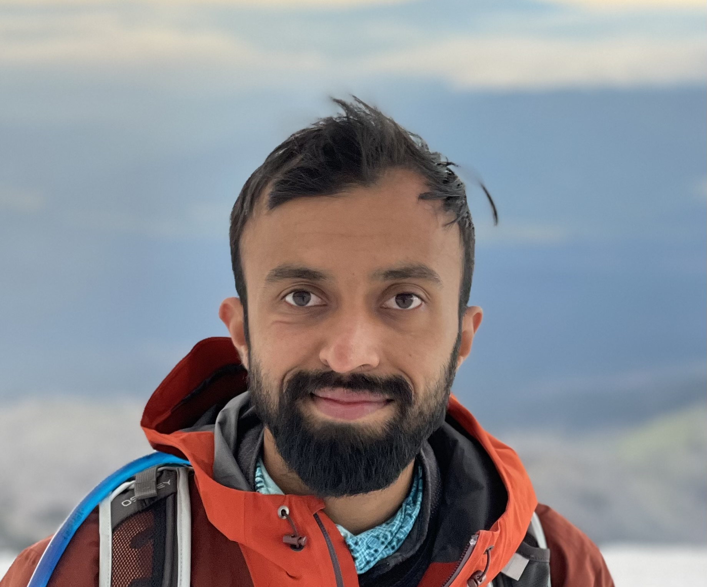

Shray Bansal

I am a Postdoctoral researcher at Georgia Tech working with Charles Isbell.
My research is at the intersections of game theory, machine learning, multiagent systems, and human-AI coordination.
I also have a PhD from Georgia Tech, where I was advised by Charles Isbell and Ayanna Howard.
My PhD research focused on developing agents (embodied and virtual) that can work alongside humans in non-zero-sum games. My work draws on research and methods from game theory, planning,
reinforcement learning and Bayesian inference; and is grounded in experiments and user-studies in scenarios involving virtual agents, simulated driving and robot arms.
I also have had the opportunity to intern with some wonderful people at Microsoft Research, Honda Research Institute,
and Monash University.
Publications
Under Review
-
VIBES - Vision Backbone Efficient Selection.
-
Joris Guérin, Shray Bansal, Amirreza Shaban, Paulo Mann, and Harshvardhan Gazula.
Under review at WACV, 2025.
2024
-
Reinforcement Learning with Cognitive Bias for Human-AI Ad Hoc Teamwork.
-
Shray Bansal, Jin Xu, Miguel Morales, Jonathan Streater, Ayanna Howard, and Charles Isbell.
CoCoMARL Workshop at the Reinforcement Learning Conference.
2023
-
Game Theoretic Methods for Human-Robot Parallel Play.
-
Shray Bansal.
Thesis, Georgia Institute of Technology
2022
-
BayesNash: Bayesian inference for Nash
equilibrium selection in human-robot parallel play.
[PDF]
-
Shray Bansal, Jin Xu, Ayanna Howard, and Charles Isbell.
Journal, Autonomous Robots.
-
Nash Equilibria in Bayesian Games for Coordinating with Imperfect Humans.
-
Shray Bansal, Miguel Morales, Jin Xu, Ayanna Howard, and Charles Isbell.
Workshop on Strategic multi-agent interactions: game
theory for robot learning and decision making at Conference on Robot Learning.
2021
-
Bayesian Inference for Human-Robot
Coordination in Parallel Play.
-
Shray Bansal, Jin Xu, Ayanna Howard, and Charles Isbell.
Workshop on Cooperative AI at NeurIPS, 2021.
2020
-
Supportive Actions for Manipulation in Human-Robot Coworker Teams.
-
Shray Bansal, Rhys Newbury, Wesley Chan, Akansel Cosgun, Aimee Allen, Dana Kuli´c, Tom Drummond,
and Charles Isbell.
IEEE/RSJ
International Conference on Intelligent Robots and Systems (IROS).
-
Planning for Human-Robot Parallel Play via
Bayesian Nash Equilibrium Inference.
-
Shray Bansal, Jin Xu, Ayanna Howard, and Charles Isbell.
Robotics: Science and Systems (RSS).
-
Attention Driven Dynamic Memory Maps.
-
Himanshu Sahni, Shray Bansal, and Charles Isbell.
Workshop
on Bridging AI and Cognitive Science in ICLR.
2019
-
Learning to Find Common Objects
Across Few Image Collections.
-
Amirreza Shaban, Amir Rahimi, Shray Bansal, Stephen Gould, Byron Boots, and Richard Hartley.
IEEE International Conference on Computer Vision (ICCV).
-
Interaction-Aware Planning via Nash Equilibria for
Manipulation in a Shared Workspace.
-
Shray Bansal, Mustafa Mukadam, and Charles Isbell.
Workshop on Human Movement Science for Physical Human-Robot
Collaboration at ICRA.
2018
-
Collaborative Planning for
Autonomous Lane Merging.
-
Shray Bansal, Akansel Cosgun, Alireza Nakhaei, and Kikuo Fujimura.
IEEE International Conference on Intelligent Robots and Systems (IROS).
2017
-
Cooperative Planning for
Autonomous Lane Merging.
-
Shray Bansal, Akansel Cosgun, Alireza Nakhaei, and Kikuo Fujimura.
Workshop on Shared Autonomy in IROS.
-
One Shot Learning for Semantic
Image Segmentation.
-
Amirreza Shaban, Shray Bansal, Zhen Liu, Irfan Essa, and Byron Boots.
British Machine Vision Conference (BMVC).
2014
-
Anticipating human actions for collaboration in the presence
of task and sensor uncertainty.
-
K. Hawkins, S. Bansal, N. Vo, and A. Bobick
International Conference on Robotics and Automation (ICRA).
2013
-
Modeling structured activity to support
human-robot collaboration in the presence of task and sensor uncertainty.
-
Kelsey P. Hawkins, Shray Bansal, Nam Vo, and Aaron F. Bobick.
Workshop on Cognitive Robotics
Systems in IROS..
-
Probabilistic human action prediction and
wait-sensitive planning for responsive human-robot collaboration.
-
Kelsey P. Hawkins, Nam Vo, Shray Bansal, and Aaron F. Bobick.
Humanoid Robots..
Teaching
I spent several semesters as a teaching assistant and head teaching assistant for the following courses at Georgia Tech: